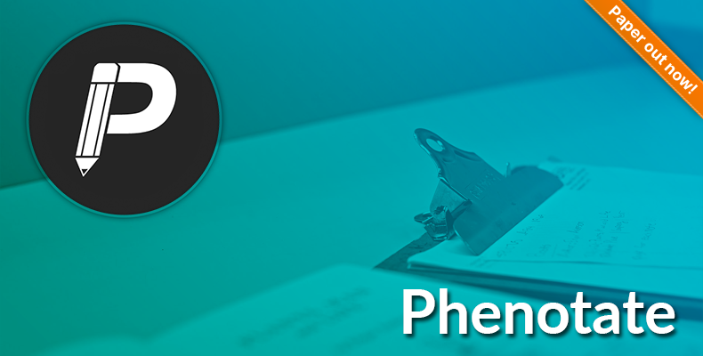
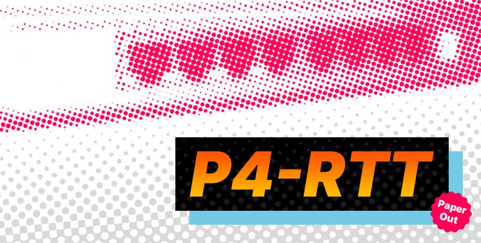
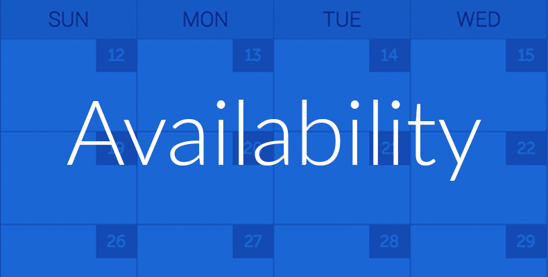

Research
Research

Fun Stuff

Education
- MSc Applied Computing, University of Toronto (2016 to 2018)
- BSc Neuroscience, Computer Science Minor, McGill University (2012 to 2016)
-
Courses I have TA'd:
- COS 324 Fall 2020 (Princeton University): Introduction to Machine Learning
- COS 484 Fall 2019 (Princeton University): Natural Language Processing
- CSC401 Winter 2018 (University of Toronto): Natural Language Computing
- CSC309 Winter 2017 (University of Toronto): Programming on the Web